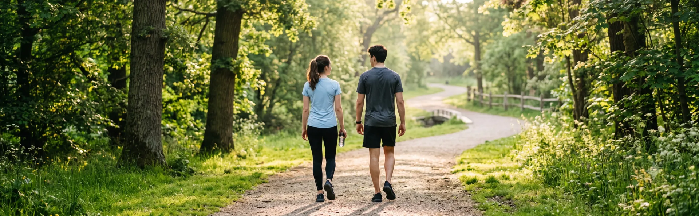
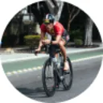

trophyTantangan Mingguan
Mulai Tantangan Sehat
Ubah rutinitas harian menjadi kebiasaan positif. Pilih tantangan sesuai tujuan kesehatanmu dan mulai hari ini.
Koleksi Pencapaian
2/6 Terbuka
social_leaderboardMemulai Hidup Sehat
local_fire_departmentPejuang Runtunan
water_dropPengendali Air
cookiePahlawan Tanpa Gula
self_improvementPengendali Pikiran
exerciseHidup Olahraga
Tantangan Aktif
3 Berlangsung
7 Hari Tanpa Makanan Manis
Target: 7/7 Hari • Sekarang: 4 Hari
Runtunan 4 Hari
water_full
Minum Air 2 Liter
Status: 1.2L / 2.0L Hari Ini
60% Selesai
steps
9000 Langkah
Langkah Hari Ini: 7.932 / 9.000
Runtunan 9 Hari
Ringkasan Mingguan
SenSelRabKamJumSabMin
Skor Minggu IniMenakjubkan! Kamu sangat aktif dibandingkan 80% pengguna lain minggu ini.
Papan Peringkat
- 1

Denny Pramana1.750 XP
- 2
Kenzo Wirawan1.400 XP
- 3
Abel Carolina1.150 XP
- 4
Ricky Pradika900 XP
Katalog Tantangan Baru
Pilih tantangan baru untuk membuat hidup sehatmu menjadi lebih seru.
Makan Buah 2 Porsi
Tambahkan setidaknya 2 porsi buah-buahan ke dalam makanan harianmu.
Olahraga 15 Menit
Luangkan waktu sejenak untuk berolahraga agar tetap sehat dan bugar.
Tidur Cukup 8 Jam
Dapatkan istirahat yang berkualitas setidaknya 8 jam setiap malam.
Makan Salad 3× Seminggu
Makan salad 3 kali seminggu selama 4 minggu untuk menjaga kesehatan tubuh.
Mental
Meditasi 10 Menit
Luangkan waktu sejenak untuk menenangkan pikiran dan fokus.